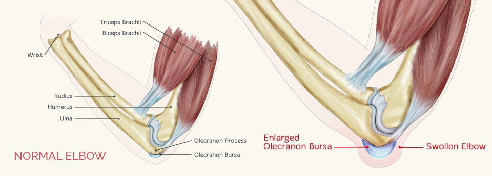
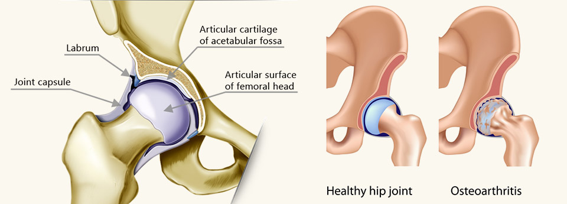
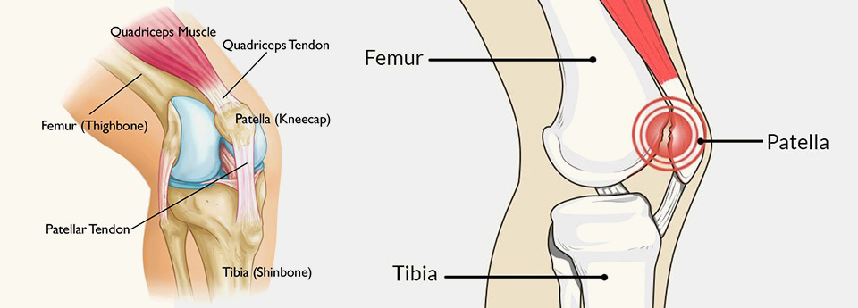
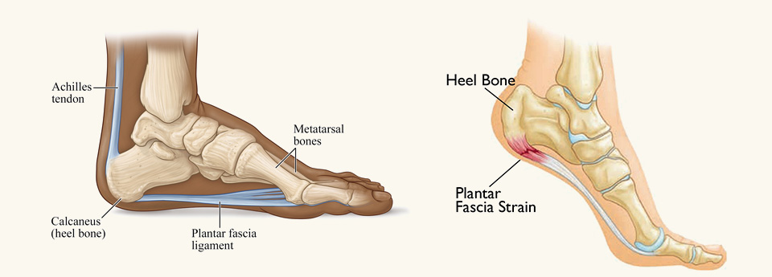
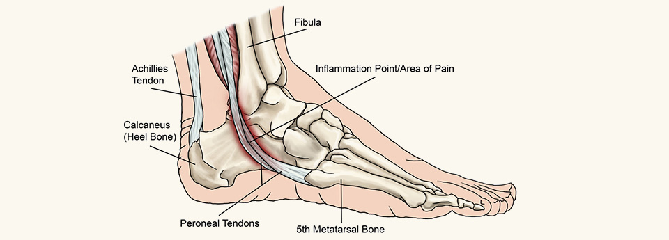

ළමා මාතෘකාවක් තෝරන්න
වැඩිදුර කියවීමට මාතෘකාවක් තෝරන්න, නැතහොත් පහත දළ විස්තරය කියවන්න.
හැඳින්වීම

වයස අවුරුද්ද දක්වා ළදරුවන්

1a. Club feet හෙවත් ළදරුවන්ගේ පාද එකක් හෝ දෙකම ඇතුලට හැරී පැවතීම. මෙය තරමක් සුලබව දැකිය හැකි අංගවිකල තත්ත්වයක් වන අතර බොහොමයක් ළදරුවන් ශල්යකර්මයකින් තොරව සුව කළ හැකිය. මූලික ප්රතිකාර වලින් පාදයන් යථා තත්ත්වයට පත්වූ පසු නිසියාකාරයෙන් පවත්වා ගැනීම පිණිස අවුරුදු 4 හතර පහ දක්වා විහිදී යන ප්රතිකාර ක්රමවේදයක් ඇත . මුලික ප්රතිකාර ප්රතිකාර ලෙස සතියකට වරක් plaster කිරීමෙන් පාදය යථා තත්ත්වයට පත්කෙරේ. ඉන් පසුව හිරිවට්ටා සිදුකරන ඉතා සුළු ශල්ය කර්මයක් මගින් පදය තවදුරටත් ප්රකුති මට්ටමට පත්කරනු ලැබේ. ඉන් පසු ලෝහමය ආදාරකයකට සවි කරන ලද විශේෂිත වූ පාවහන් පැළදීමෙන් පාද ප්රකුර්ති මට්ටමේ පවත්වා ගැනේ. ලමුන්ගෙන් සුළු පිරිසකට පසුකාලීනව නැවත plaster කිරීමට හෝ ශල්ය කර්මයකට භාජනය කිරීමට අවශ්ය විය හැක.
1b. උකුල් සන්ධිය අඩු වශයෙන් වර්ධනය වීම හෝ විසන්ධි වී පැවතීම . අලුත උපන් දරුවන් රෝහලේදී කෙරෙන සායනික පරීක්ෂාවෙන් මෙම රෝගය හඳුනා ගැනේ. ළදරුවන් උකුල සන්දියේ ස්කෑන් පරීක්ෂණයකට ලක්කෙරේ. එමගින් සන්දියේ ස්වභාවය නිසි අකාරයෙන් හඳුනා ගත හැක. මෙය ද සුලබ තත්ත්වයක් වන අතර වැඩිමනක්ම දරුවන් ශල්යකර්මයකින් තොරව සුව කළ හැක. කෙසේ වුවද සන්ධියේ වර්ධනය ඉතා අඩු මට්ටමක පවතින අවස්ථාවක ශල්යකර්ම එකක් හෝ කිහිපයක ආධාරයෙන් ප්රකෘති පත් කළ හැක .
1c. අත් පා හා ඇඟිලිවල අසාමාන්යතා . ඉහත සඳහන් තත්ත්වන් හැරුණුකොට තවත් අසාමාන්යතා දැකිය හැකි අතර ළදරුවාගේ සිරුරේ වර්ධනය වූ පසු ශල්යකර්මයට යොමු කරනු ලැබේ. ඔබගේ ගැටලුව අප වෙත යොමුකරන්න.
1d.අස්ථි බිඳීම් දරු උපතේදී හා පසුකාලීනව අතේ හා කකුලේ අස්ථි බිඳී යා හැක. මේවා වැඩිමනක් නිරායාසයෙන්ම සුවවේ. යම් ළදරුවකුගේ අස්ථි නිතර බිඳීමට ලක් වන්නේ නම් එය අස්ථිවල සවිශක්තිය හා සංයුතියේ දුර්වලතාවයක් වන අතර එය සඳහා ප්රතිකාර ගත යුතුය. නිරෝගී දරුවෙකුගේ සිදුවන සාමාන්ය අස්ථි බිඳී යාමක් විශේෂ ප්රතිකාරයකින් තොරව සුව වන අතර ඒවායින් පසුකාලීන ව ජීවිතයට බලපෑමක් නැත .
අස්ථි බිඳීම්

a. වයස අවුරුදු 1 සිට 6 දක්වා දරුවන්ගේ අස්ථි බිඳීම්. ක්රියාශීලී දරුවන් ක්රීඩා කරන විට, ගෙදරදොර වැටීම් , හැප්පීම් වලදී අස්ථි බිඳී යා හැක. මෙවන් අවස්ථාවක නිවැරදි ප්රතිකාර නිවරදි වේලාවට ලබා නොදීම නිසා සංකුලතා වලට ලක් විය හැක. මෙහිදී ඉතා තීරණාත්මක වන්නේ වැරදුණු ගොඩ වෙදකම් වලින් ඇතිවන ඇද කුද හා අත්පා හා සංදී වලට සිදුවන හානිය පසුකාලීනව ප්රකෘති තත්ත්වයට පත් කිරීමට නොහැකි වීම නිසයි . මෙම කියමන වැලමිට සන්ධිය අවට සිදුවන අස්ථි බිඳීම් සඳහා සුවිශේෂ වේ . මෙම වයස් කාණ්ඩයේ දරුවන්ගේ අස්ථි බිඳීම් සරල ප්රතිකාර ක්රම මඟින් සම්පූර්ණයෙන්ම සුව කළ හැක. කරුණාකර නිසි ප්රතිකාර සඳහා යොමුවන්න. ඔබට ගැටලු තිබේ නම් අප අමතන්න .
2b. වයස අවුරුදු 7 සිට 18 දක්වා දරුවන්ගේ අස්ථි බිඳීම් .
(1) Collar bone/ Clavicle බිඳීම් සියල්ලම ශල්යකර්මයකින් තොරව සුව කළ හැක. ඉතාම කලාතුරකින් මෙම බිඳීම් ශල්යකර්මයකට භාජනය කිරීමට අවශ්ය වන අවස්ථා ඇත .
(2) වැලමිටට ඉහළ කොටසේ සිදුවන අස්ථි බිඳීම්. එම කොටස නොසෙල්වා තැබීමෙන් සුවපත් වෙයි. මේ සඳහා පැරිස් බදාම ආධාරකයක් යොදා ගනී. කලාතුරකින් සිදුවන ස්නායු පැලී යාම නිසා මැණික්කටුව සන්ධියෙන් අත එසවීමට බාධා විය හැක.
(3) වැලමිට සන්ධිය අවට සිදුවන බිඳී යෑම් බොහෝවිට ශල්යකර්මයක් මගින් යථා තත්ත්වයට පත් කළ යුතුය. මෙම කොටස් බොහෝසෙයින් බිඳී ඇති නම් පසුකාලීනව වැලමිට සන්ධි ක්රියාකාරීත්වය යම් ප්රමාණයකින් අඩු වීමට ඉඩ ඇත.
(4) වැලමිටෙන් පහළ කොටසේ අස්ථි දෙකක් පවතී. අස්ථි දෙකම බිඳී ගිය විට වේදනා නාශකයක් භාවිතා කොට ඇදවුනු කොටස් නැවත කෙලින් කිරීම සිදුකෙරේ. අස්ථි දෙකම බිදී වෙන්වී ගිය විට ඒවා ශල්යකර්මයක් මඟින්යථා තත්ත්වයට පත් කිරීම කළ යුතුය .
(5) ඇඟිලි වන සිදුවන බිඳී යෑම විශේෂ ශල්යකර්ම වලින් තොරව බොහෝ විට සුව කළ හැකිය. විශේෂ බිඳීයැම වලට පමණක් ශල්යකර්මයක් කිරීම අවශ්යවේ.
(6) උකුල් සන්ධිය හා කලවය මෙම වයස් කාණ්ඩයේ දරුවන්ගේ උකුල් සන්ධියේ බිඳී යාම් ශල්යකර්මයකට භාජනය කිරීම අත්යවශ්ය වේ. ඊට අමතරව කලවා ප්රදේශය අස්ථි බිඳී යාම අපි බොහෝ අවස්ථාවල ශල්යකර්මයකට භාජනය කිරීම අනුමත කරමු. එසේ නොකළ අවස්ථා වල දී කකුල කෙටි වීම, ඇදට සවිවීම සිදුවිය හැක.
(7) දණහිසින් පහළ කොටසේ සිදුවන බිඳීම්. බිඳුනු කොටස් කැබලි රාශියකට විසිරී නොමැති අවස්ථාවල දී පැරිස් බදාම ආධාරකයක් මාර්ගයෙන් නිසොල්මන්ව තැබීමෙන් සුව කළ හැක. එසේ නොවුණහොත් ශල්යකර්මයකට භාජනය කළ යුතුය.
(8) වළලුකර ආශ්රිත ව සිදු වන කැබලි රාශියකට වීසිරි සිදුවන බිඳීයාම් ශල්යකර්මයක් මඟින් යථා තත්ත්වයට පත් කළ යුතුමය.
සියලුම වයස් වල අස්ථි බිඳීම් ආශ්රිතව තුවාලයක් ඇති විට.

අස්ථි බිදීම් සිදුවන විට හම තුවාල වී අස්ථි කොටස් පිටතට නිරාවරණය විය හැක. මෙහිදී බාහිර පරිසරයේ ඇති පස්,වැලි , දිරාගිය කොටස් හෝ වෙනත් අපද්රව්ය තුවාලය තුල තැවරිමක් සිදුවේ. ඒ නිසා එම තුවාලය ආසාදනය වීමට ලක් වේ(පැසවීම ) . ප්රතිජීවක බෙහෙත් ලබා දීම අවශ්ය වේ. මෙවැනි අවස්ථාවල අසාදන පාලනයකින් තොරව අභ්යන්තරයෙන් යොදන ලෝහමය ආධාරක යෙදීම සුදුසු නොවේ. මීට අමතරව වරින්වර තුවාලය පිරිසිදු කිරීම අවශ්යවේ. මෙවැනි අවස්ථා වල තුවාලය සුව කර ගන්නා තුරු බාහිරින් සවි කරන ලද ලෝහමය රාමුවකට සවි කර ප්රතිකාර ලබා දෙනු ලැබේ. තුවාලය විශාල නම් ඒ සඳහා රුධිරවාහිනී බද්ධ කිරීමේ ශල්යකර්ම හා ප්ලාස්ටික් සැත්කම් කිරීමේ අවශ්යතාවයක් ද විය හැක .
සන්ධි පැනීම්

සියලුම සන්ධි පැනීම් ඉතා කෙටි කාලයකදී ශල්යකර්මයකින් තොරව වේදනාවකින් තොරව විනාඩි දෙක තුනක් වැනි කෙටි කාලයකදී යථා තත්ත්වයට පත්කළ හැකි අතර මෙය ඉතා සාර්ථක ක්රමයකි. රෝගියාව විනාඩි 10-15 වැනි කාලයකට සිහිනැති කෙරේ. එදිනම හෝ පසුදින රෝහලෙන් මුදා හැරිය හැක. නිසි ප්රතිකාර ප්රමාද වූ විට, ගොඩ වෙදකම් අසාර්ථක වූ විට සන්ධියක් යථා තත්ත්වයට පත් කිරීම ශල්යකර්මයකින් සිදු කළ යුතු අතර මෙය පැය දෙක තුනක් අතර කාලයක් ගතවන ක්රියාවලියකි. දිනකීපයක් රෝහල් ගතවී සිටිය යුතුයි. බොහෝවිට ප්රතිඵල යහපත් නොවන අතර අදාළ සන්ධියේ ක්රියාකාරීත්වය බොහෝසෙයින් අඩාල විය හැක. ගොඩ වෙදකම් කර අමාරුවේ නොවැටෙන්න.
කකුල් වල ඇද කුද

a . කුඩා දරුවන් ඇවිදීමට පටන්ගන්නා අවදියේදී කකුල්වල ඇද බවක් පෙන්නුම් කරයි. කකුල් පළල්ව තබා ඇවිද යයි. මෙය සාමාන්ය තත්ත්වයකි. කකුල් මෙරීමත් සමග වයස අවුරුදු 1 සිට 5 දක්වා කාලය තුලදී ඈත්ව පිහිටි දණහිස් ලන් වීමටත් එකිනෙක ගැටෙමින් පැවැති දණහිස් ඈත් වී සාමාන්ය පෙනුම කරා ලඟා වේ. එම තත්ත්වය දිගින් දිගටම පවතී නම් පමණක් ප්රතිකාර අවශ්ය වේ. මේ සඳහා විශේෂ සපත්තු පැළඳීම, ශල්යකර්මයකට ලක් කිරීම මගින් කකුල් යථා තත්ත්වයට පත් කර ඇත. පාසල් යෑමට පෙර කකුල් සුවකිරීම ඉලක්කයයි. විටමින් D උනතාවය, සවිෂක්තියෙන් මද අස්ථි නිසාද කකුල් බකල් වියහැක. වෛද්ය වරයකු හමු වී ඔබේ දරුවා පෙන්වා ගන්න.
b . පාදය ඇතුලට හරවා පා තබමින් ඇවිදින තත්වයද සුලබව දක්නට ලැබේ. මෙම අබාදයද බොහොමයක් දරුවන්ගේ ස්වභාවයෙන්ම සාමාන්ය අතට හැරේ. උකුල සන්දිය හරිහැටි නොපිහිටීම, කකුලහි අස්ථිය ඇතුලට ඇඹරි තිබීම හා පදයේ මහපට ඇගිල්ල ඇතුලට නෙරා පිහිටීම නිසා මෙම තත්ත්වය හටගනී. තත්ත්වය පරීක්ෂා කරවා ගැනීම වැදගත් වේ. c. පැතලි යටිපතුලක් පිහිටීමද ඇවිදීමට පටන් ගන්නා වයසේ දරුවන් තුල දැකිය හැක. මෙවැනි දරුවන් ඇවිදින විට පාදය පිටතට හැරී පිහිටීමක් පෙන්නුම් කරයි. පාදය මෝරා වැඩෙන කාලය වන විට සාමාන්ය ස්වරුපය ලැබෙ. කලාතුරකින් අසාමාන්ය පිහිටීමක් නිසාද පාද මෙලෙස පිහිටිය හැක. එමනිසා මෙම තත්ත්වය පරික්ෂා කරවා ගන්නේනම් මැනවි.
දරුවන්ගේ ඇවිදීමේ අසාමාන්යතා
වේදනාකාරී නොන්ඩි ගැසීම

ඔබේ දරුවා ඇවිදින විට වේදනාවක් දැනෙයි නම්, නොන්ඩි ගසමින් ඇවිදියි නම් අප්රමාදව පරික්ෂා කරවා ගන්න. කොදු නාරටියේ, උකුල් සන්ධියේ, දණහිසේ සිදු වන රෝගයක් මෙයට හේතු කාරක විය හැක.
වේදනාවෙන් තොරව නොන්ඩි ගැසීම

මෙම ලක්ෂණ පෙන්නුම් කරන්නේ බොහෝ විට පාදයක අසාමාන්යතාවයක් මතයි, මෙයට හේතු ලෙස කකුලක දිගේ වෙනස්කම්, කකුලේ සන්ධි නිසි පරිදි නැවීම් හා දිග හැරීම් සිදු නොවීම, හෝ පේශි හා ස්නායු දුර්වලතාවය නිසා සිදුවිය හැක .
අස්ථි තුළින් හටගන්නා ගෙඩි
අස්ථි තුළින් හටගන්නා ගෙඩි
වයස අවුරුදු 1-20 දක්වා දරුවන්ගේ අස්ථි වලින් ගෙඩි හට ගැනීම සුලභව දක්නට ලැබේ. එම ගෙඩි වර්ග පිළිකා නොවන, පිළිකාමය හා පසුකාලීනව පිළික බවට පෙරළිය හැකි වර්ගයේ ගෙඩි ලෙස දැක්විය හැකිය. අප දැක ඇති දෙය නම්, බොහෝ දෙමාපියන් මේ සදහා රෝහලකින් ප්රතිකාර ගැනිඉමට මැලිවී ගොඩ වෙදකම් වලට යොමුවී රෝගය උත්සන්න අවස්ථාවක රෝහල් වෙත නැවත පැමිණීමයි. මෙවන් අවස්ථාවකදී ජීවිතය බේරා ගැනීමට අත් හා කකුල් කපා ඉවත්කර දැමීමට සිදුවීම හෝ ජීවිතය නැති වීම වළක්වා ගත නොහැකි මට්ටමකට පත් විය හැක. හටගන්නා ගෙඩිය බොහෝවිට දක්නට ලැබෙනුයේ උරහිස හා දණහිස ආශ්රිතව ඇතිවන ඉදිමීමක් ලෙසයි. එවැන්නක් දුටු විගස රජයේ රෝහලකින් පරික්ෂා කරවා ගන්න. රෝගය හරිහැටි හදුනා ගැනීමට දරුවාව Xray, ස්කෑන් පරීක්ෂණ වලට යොමු කෙරේ. පිළිකාමය නොවන හා පසුකාලීනව පිළිකාමය බවට පෙරලිය හැකි ගෙඩි, නැතිනම් අතිවල ඇතිවන අසාමාන්ය වර්දනයන් සුළු ශල්ය කර්මයකින් ඉවත් කරනු ලැබේ. ඉවත් කල කොටස් සෛල පරීක්ශා කිරීමට යොමු කෙරේ. පිළිකාමය වර්දනයන් සදහා ශල්ය කාර්ම වලට අමතරව නික්ෂේපන ප්රතිකාර, කිරණ ප්රතිකාර වලට භාජනය කෙරේ. වෛද්ය විද්යාවේ දියුණුවත් සමග, නොපැතිරී ඇති, මුල් අවස්ථාවේ පවතින පිළිකාමය වර්දනය ඇති අස්ථි කොටස පමණක් ඉවත් කර, ඉවත් කල කොටසට සමාන ලෝහමය අස්ථි කොටසක් යොදා කකුල නැවත සකස් කිරීමේ හැකියාවක් වර්තමානයේ ඔබට ලබාදිය හැක. මෙනිසා කකුල, කපා ඉවත් කරීම් අවම වී ඇත. එම නිසා නිසි ප්රතිකාර වලට යොමු වන්න. නොමග නොයන්න.
අස්ථි තුළින් හටගන්නා ගෙඩි
PAIN OVER THE KNEE CAP

You will feel pain at the top, the lower end and behind the knee cap. Pain behind the knee cap is mainly due to wear and tear of the inside surface of the knee cap. It can be treated with medication, knee supports and physical therapy.
Advanced damage to the knee cap needs surgical replacement which is usually done along with total knee replacement surgery.
Pain over the top and the bottom of the knee cap are due to inflammation at the site of tendon attachments to knee cap. This settles with medication, knee bracing and physical therapy.
අස්ථි හා සන්ධිවල සිදුවන ආසාදන

අස්ථි හා සන්ධි ආසාදන ඇති විය හැක. කුඩා දරුවන්ගේ කකුල් වල කුඩා තුවාල ඇති විට විසබීජ රුධිරය හරහා අස්ථි හා සන්ධි වෙත ළඟා වී ඒවායේ ආසාදනයන් ඇති කරයි . උණ ගතිය සන්ධි ඉදිමීම, මතුපිට සම රතු පැහැ ගැනීම හා සන්ධිය සෙලවීමට නොහැකි වීම එහි රෝග ලක්ෂණ වේ . අප්රමාදව වෛද්ය උපදේස් ලබාගන්න.
කොන්දුනරටියේ ඇද වීම්

කොන්දුනාරටියේ සිදුවන ඇදවීම් කුඩා වයසේ සිට වයස අවරුදු 18 පමණ වනතෙක් දක්නට ලැබේ. අඩු වයසකදී පෙනීමට පටන්ගන්නා ඇදවීම් වයස 18 පමණ වනවිට බොහෝ අඩවීමට ලක්වේ. අවුරුදු 10-14 පමණ කාලයේදී ආරම්භ වන ඇද වීම් එතරම් අදවීමකට ලක් නොවේ. පැති කුදය ගැහැණු දරුවන්ගේ වඩා සුලභව දක්නට ලැබේ. පවතින ඇද වීම් වැඩිවියට පත්වූ පසු වඩාත් ප්රකට වේ. මේ නිසා ගැහැණු දරුවන්ගේ උස නොපෙනීම, උරහිසක් පහතින් පිහිටීම, උකුලක් පහතින් පිහිටීම, ඉදිරියට නමුනුපසු එක් උරපත්තක් ඉස්සී පැවැතීම හා පියයුරු වල විශාලත්වයේ වෙනස්කම් ඉතා සුලභ ලක්ෂණ ලෙස කිව හැක. දරුවන් පරීක්ෂා කිරීමෙන් පසු හා Xray පරීක්ෂණයකින් පසු, කොඳු නාරටියේ ඇදවීමේ කෝණයේ විශාලත්වය අනුව ප්රතිකාර නියම කෙරේ. මේ සඳහා ව්යායාම, ප්ලාස්ටික් වලින් තැනූ brace එකක් පැළඳීම හෝ ශල්ය කර්මයක අවශ්යතාවය පැහැදිලි කර දිය හැක. පහත දක්වා ඇති රූප බලන්න.
වේදනාවන්

දරුවන්තුල දිගුකල් පවතින වේදනාවන් සුලභ නැත. බෙල්ලේ හා දණහිසේ වේදනාව මදක් සුලභව හමුවේ. එක් වැදගත් හේතුවක් වන්නේ අමතර ඉල ඇටයක් බෙල්ලේ පිහිටීම නිසා ස්නායු තෙරපීමකට ලක්වීමයි. මෙය ඇතිවූ විට, බෙල්ලේ හටගන්නා වේදනාව අත දිගේ පහලට ඇඟිලි දක්වා යන්නාක් සේ දැනේ. වෙවන් ලක්ෂණ තිබේනම් පරීක්ෂා කරවා ගන්න
දණහිසේ වේදනාව දණහිසේ හෝ උකුල හන්දියේ හෝ අභාදයකින් හට ගත හැක. ක්රීඩා කරන වයස 12-15 දරුවන්ගේ දණහිසට මදක් පහලින් ඇතිවන වේදනාවට සාර්ථක ප්රතිකාර ඇත. උකුල් සන්දියහි ඉදිමීම්, ලේ ගමනයේ අවහිරතා හෝ අස්ථි කොටස් ලිස්සා යාම නිසාද දණහිසේ වේදනාව හටගත් හැක. ඔබට ගැටළුවක් ඇත්නම් කරුණාකර අප අමතන්න.
දිඟු කාලීනව පවතින අන්ගවිල්කලතාවයන්
. උපතේදී පැවති අත් හා පදයන්ගේ දිගෙහි වෙනස්කම්, හන්දි නැමෙන ප්රමාණයේ සීමාවන්, කුඩාකල නිසි ප්රතිකාර වලට යොමුනොවීම හෝ නොලැබීම නිසා තවමත් පවතින පිහිටීම් වලට ප්රතිකාර ලබාදිය හැක. අලුත උපන් දරුවන්ගේ මොලයට oxygen නොලැබීම, මොලයේ ආසාදන හා ඉපදීමේදී ඇතිවූ සන්කුඋලතා නිසාවෙන්, දැනට ඇවිදීමේ දුෂ්කරතා ඇති ළමුන්ට ද ප්රතිකාර කෙරේ. වැඩිදුර විස්තර සඳහා අප අමතන්න.
ගොඩ වෙදකමින් අතරමං වූ ඔබේ දරුවට
බොහෝවිට මෙවැනි යල්පැනගිය ක්රම වලට යොමුවන්නේ වැඩිහිටියන්ගේ, අසල්වැසියන්ගේ හෝ ගම්ම්බද මහාචර්ය වරුන්ගේ උපදෙස් පිළිපැදීමෙනි.මෙම ක්රම වලින් සුවවන අවස්ථාද නැත්තේම නැත. එසේ සුවවන්නේ නිකන් නිසොල්මන්ව බිඳුණු කොටස තැබුවත් සුවවන බින්දීම්ය. නොඑසේනම් නොපැන්න හන්දියකට එය පැන ඇතිලෙස ප්රතිකාර කර සුවකළ විටය. හන්දි ආසන්නයේ සිදු වන කැඩීම් වලට පත්තු බැඳීම නිසා නොයෙක් සන්කුඋලතා ඇති වේ. අත් පා අකර්මන්ය වීම්, කොටස් මැරී යාම්, ඇද වී සවිවීම්, පැසවීම නිසා අත කපා ඉවත් කිරීමට සිදුවීම, හන්දි සදා කාලිකව සවිවීම් උදාහරණ ලෙස දැක්විය හැක. අවාසනාවකට, ගොඩ වෙදුන් කරන මේ විනාශයට නඩු නැත, රූපවහිනියෙ, ගුවන්විදුලියේ හෝ පත්තරේ මේ ගැන කියන්නේ ද නැත. මේ හා සමාන ගැටළු ඔබටත් ඇත්නම් අප හා සම්භන්ද වන්න.